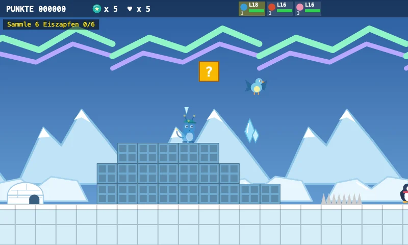
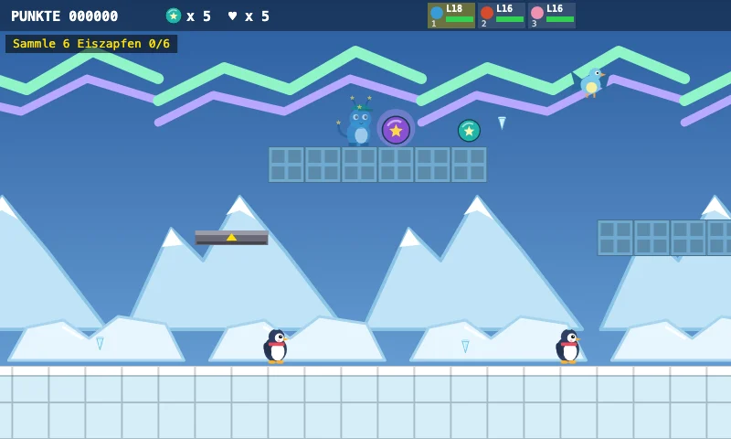
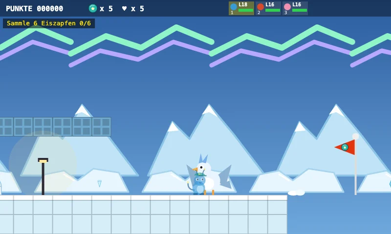
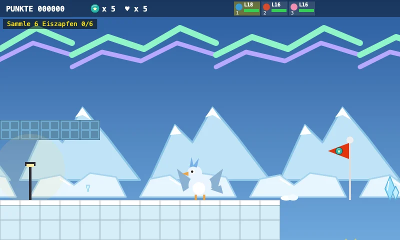

Aventure Zappilon
Monde polaire glacé
Bienvenue dans le monde polaire !
Ramasse 6 glaçons, puis le drapeau s'ouvrira.
Attention : la glace fissurée se brise sous tes pieds !
Cherche bien les secrets !
Cinq aperçus du niveau

Le monde
Bienvenue dans le monde polaire !

Objectif
Ramasse 6 glaçons

Particularité
Cherche bien les secrets !

Boss
Frostfalke, gardien de la glace — Les attaques Électrik et Feu sont efficaces contre Frostfalke !

Dernière ligne droite
Le drapeau d'arrivée t'attend au bout. Arriveras-tu jusque-là ?
Découvre des secrets, relève des défis et trouve le chemin vers le but.